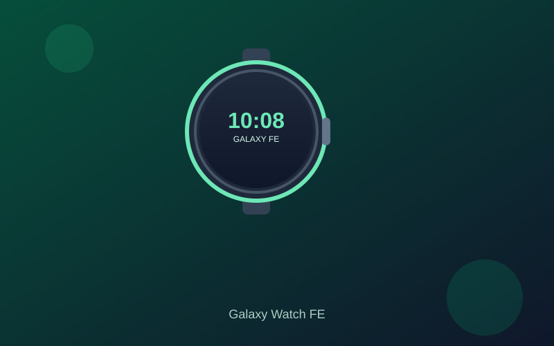

Samsung Galaxy Watch FE Review: Wear OS Value Under $150
The Galaxy Watch FE brings a refined circular design, sapphire crystal durability, and full Wear OS experience to a price that often lands between $119 and $150.
Samsung’s Fan Edition strategy lands cleanly on the wrist with the Galaxy Watch FE. It keeps the polished circular aluminum case and familiar One UI Watch interface while dialing back a few premium extras so the street price regularly sits inside the under-$150 window. For Galaxy phone users especially, the ecosystem handoff feels seamless.
The 1.2-inch Super AMOLED display is bright and sharp enough for notifications, workout metrics, and quick glances. Sapphire crystal glass adds meaningful scratch resistance over typical budget watches, and the overall build feels more premium than the price suggests. The 40 mm size and light weight suit all-day wear without bulk.
Battery life typically lands around a day to a day-and-a-half with normal use, which is expected for a full Wear OS device. Sleep tracking, continuous heart rate, stress monitoring, and body composition analysis cover the core health needs. Built-in GPS handles outdoor runs, and Bluetooth calling plus message replies work reliably when paired with a Samsung phone.
Software is the differentiator. Wear OS with Samsung’s One UI Watch gives access to Google apps, Galaxy AI coaching features on supported models, and deep integration with Samsung Health. You get the flexibility of an app ecosystem that pure fitness trackers lack, while the interface stays responsive for daily tasks. The trade-off is shorter battery life than Amazfit or basic Fitbit options.
If you want a proper Wear OS smartwatch with durable glass, solid health tools, and Galaxy phone synergy without climbing past $150, the Galaxy Watch FE is one of the stronger current values. It will not match flagship battery or the newest sensors, but for most daily users the balance of features, design, and price is easy to recommend.
Key Takeaways
- Price Range: ~$119 – $150 (Amazon / retailers)
- Display: 1.2-inch Super AMOLED with sapphire crystal
- Battery: ~1–1.5 days typical Wear OS use
- Features: Wear OS, GPS, heart rate/sleep/stress tracking, Bluetooth calling, Galaxy integration